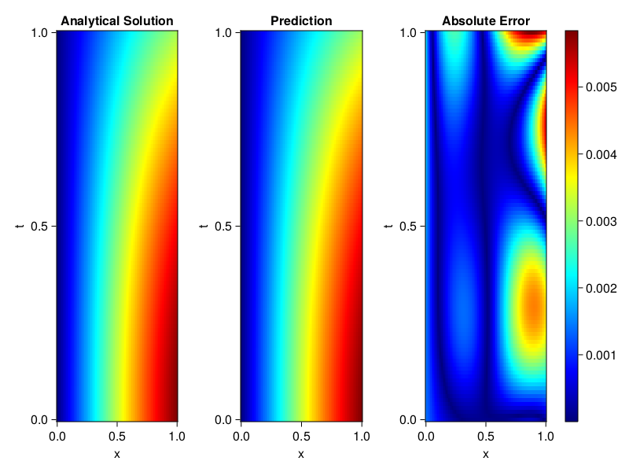
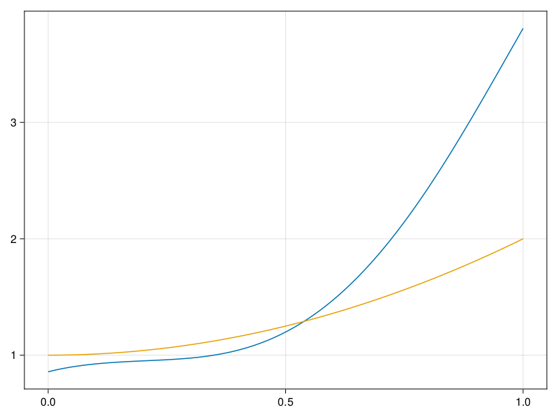

Inverse problem for the wave equation with unknown velocity field
We are going to sovle the wave equation.
using Sophon, ModelingToolkit, IntervalSets
using Optimization, OptimizationOptimJL
@parameters x, t
@variables u(..), c(..)
Dₜ = Differential(t)
Dₜ² = Differential(t)^2
Dₓ² = Differential(x)^2
s(x,t) = abs2(x) * sin(x) * cos(t)
eq = Dₜ²(u(x,t)) ~ c(x) * Dₓ²(u(x,t)) + s(x,t)
bcs = [u(x, 0) ~ sin(x),
Dₜ(u(x, 0)) ~ 0,
u(0, t) ~ 0,
u(1, t) ~ sin(1) * cos(t)]
domains = [t ∈ Interval(0.0, 1.0),
x ∈ Interval(0.0, 1.0)]
@named wave = PDESystem(eq, bcs, domains, [t,x], [u(x,t),c(x)])\[ \begin{align} \frac{\mathrm{d}}{\mathrm{d}t} \frac{\mathrm{d}}{\mathrm{d}t} u\left( x, t \right) =& c\left( x \right) \frac{\mathrm{d}}{\mathrm{d}x} \frac{\mathrm{d}}{\mathrm{d}x} u\left( x, t \right) + \cos\left( t \right) \left|x\right|^{2} \sin\left( x \right) \end{align} \]
Here the velocity field $c(x)$ is unknown, we will approximate it with a neural network.
pinn = PINN(u = FullyConnected((2,16,16,16,1), sin),
c = FullyConnected((1,16,16,1), tanh))
sampler = QuasiRandomSampler(500,100)
strategy = NonAdaptiveTraining(1, (10,10,1,1))NonAdaptiveTraining{Int64, NTuple{4, Int64}}(1, (10, 10, 1, 1))Next we generate some data of $u(x,t)$. Here we place two sensors at $x=0.1$ and $x=0.5$.
ū(x,t) = sin(x) * cos(t)
x_data = hcat(fill(0.1, 1, 50), fill(0.5, 1, 50))
t_data = repeat(range(0.0, 1.0, length = 50),2)'
input_data = [x_data; t_data]
u_data = ū.(x_data, t_data)1×100 Matrix{Float64}:
0.0998334 0.0998126 0.0997503 0.0996464 … 0.275281 0.267213 0.259035Finally we construct the inverse problem and solve it.
additional_loss(phi, θ) = sum(abs2, phi.u(input_data, θ.u) .- u_data)
prob = Sophon.discretize(wave, pinn, sampler, strategy; additional_loss=additional_loss)
@time res = Optimization.solve(prob, BFGS(), maxiters=1000)u: ComponentVector{Float64}(u = (layer_1 = (weight = [-0.7129336569525029 0.6141797605761585; 1.0780737610143245 -0.19184687927008437; … ; -0.6850060254311584 0.41202999351636693; 1.0339789234411771 -1.096939648759943], bias = [0.3702604732029338; -0.06348191149323192; … ; -0.3818299551042139; 0.6101804471299417;;]), layer_2 = (weight = [0.4504266775685979 0.006633861171229464 … -0.6079080467404178 0.5042548752088652; -0.5509931090625102 -0.4089231587910094 … -0.32172473358845716 0.37596108908929643; … ; 0.4017475396969925 -0.3953827545412736 … -0.16285123133048643 0.26922320024041757; 0.16975535450128262 -0.3740620808242038 … -0.005547454662167661 0.3136271908187015], bias = [0.057468418505873496; -0.14352257396244683; … ; -0.0765225064050754; -0.00976310802913311;;]), layer_3 = (weight = [0.1092618182687869 -0.26589846595828254 … -0.29106872551851914 -0.5148674650051607; -0.2806227075831032 -0.15255377469136086 … -0.26601928637710104 0.3365250463930299; … ; 0.42394755006064216 0.35320270040990454 … -0.20548784326516686 0.14999114148542114; -0.01274235365182643 -0.4384357238686958 … -0.2509070742562022 -0.33870653777550025], bias = [0.038423106242725207; 0.09823503850527263; … ; -0.28756022658429176; 0.3013170048761043;;]), layer_4 = (weight = [0.3975254494892539 0.12787007151703236 … -0.5766549168936657 -0.20385583521712794], bias = [-0.07626245727775503;;])), c = (layer_1 = (weight = [-0.8932480642460955; -2.5399765623425288; … ; 0.8903012992990568; 2.241438317102517;;], bias = [0.39616950431995196; -0.4718262398603796; … ; -0.3786044990496122; 0.09710115333875918;;]), layer_2 = (weight = [0.47827849489708285 -0.3920401760645281 … -0.3149477647664172 -0.5949813420316612; -0.4976003504892946 -0.4194471770073945 … -0.4009791392204748 0.012585368508029014; … ; -0.38740376542055177 -0.38589819803018266 … 0.38854156572152054 -0.5756806241742304; -0.06935940578154201 -0.17201938517916918 … -0.18335165636043474 0.015901485398005386], bias = [0.1133385877798001; 0.19067988807595856; … ; 0.3524754819429246; -0.054046957416139886;;]), layer_3 = (weight = [0.08248816378215684 0.3515321538217122 … 1.2653643037663596 -0.3463552673296054], bias = [0.31848959456380904;;])))Let's visualize the predictted solution and inferred velocity
using CairoMakie
ts = range(0, 1; length=100)
xs = range(0, 1; length=100)
u_pred = [pinn.phi.u([x, t], res.u.u)[1] for x in xs, t in ts]
c_pred = [pinn.phi.c([x], res.u.c)[1] for x in xs]
u_true = [ū(x, t) for x in xs, t in ts]
c_true = 1 .+ abs2.(xs) |> vec
axis = (xlabel="x", ylabel="t", title="Analytical Solution")
fig, ax1, hm1 = heatmap(xs, ts, u_true, axis=axis; colormap=:jet)
ax2, hm2= heatmap(fig[1, end+1], xs, ts, u_pred, axis= merge(axis, (;title = "Prediction")); colormap=:jet)
ax3, hm3 = heatmap(fig[1, end+1], xs, ts, abs.(u_true .- u_pred), axis= merge(axis, (;title = "Absolute Error")); colormap=:jet)
Colorbar(fig[:, end+1], hm3)
fig
fig, ax = lines(xs, c_pred)
lines!(ax, xs, c_true)
fig